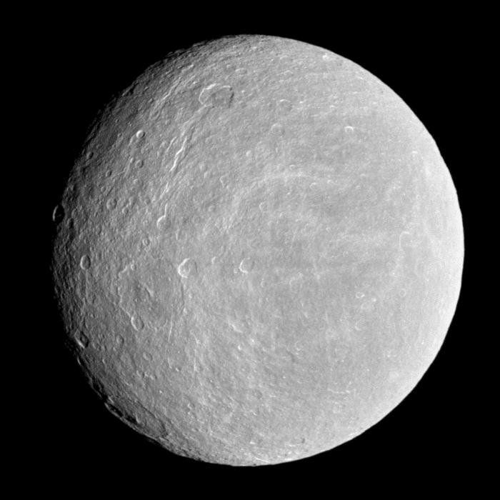
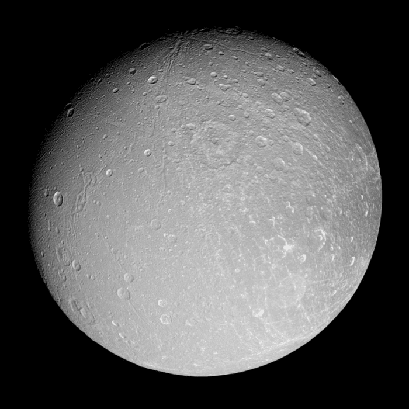
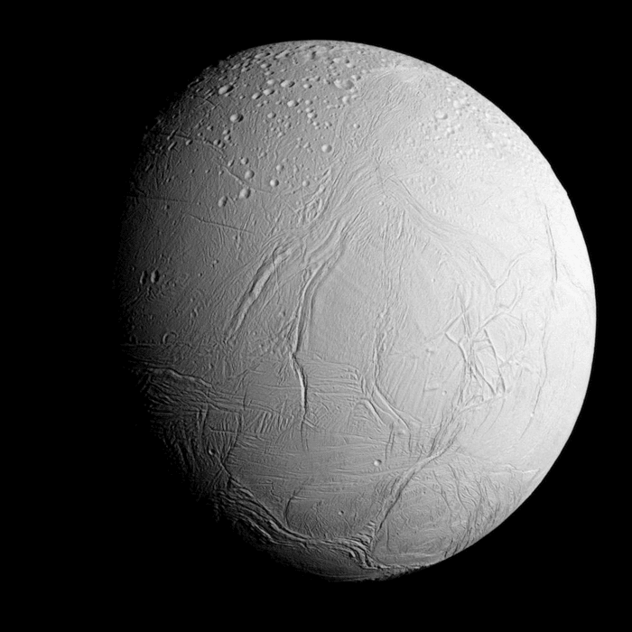

Generelt om månene
Saturn har 274 måner, flere enn noen andre i solsystemet. Men kun syv av disse er kuleformet. De andre månene har for liten tyngdekraft til å opprettholde en slik form. Jeg vil her ta for meg disse syv største.
Mimas
Mimas er av de syv største månene til Saturn, men også den minste. Den ble oppdaget av William Herschel, en tysk-britisk astronom og komponist, i 1789. Man antar at Mimas hovedsakelig består av is, men med små forekomster av stein. Overflaten er full av kratere, hvor den største er Herchel krateret. Det har en diameter på 130 km, med 50 km høye vegger og går ned 10 km. Man antar at legemet som lagde Herchel krateret var nære ved å ødelegge Mimas. Avstanden til Saturn er gjennomsnittlig på 186 000 km. Den bruker 22 timer og 26 minutter på banen rundt Saturn. Mimans er månen som er nærmest Saturn av de runde månene og virker som den er konstant frossen. Dette forundrer forskerne pga. nærheten til moderplaneten. Mimas blir ofte kalt "Saturn I".
Mimas var en mythologisk gigant (titan) i gresk mytologi, sønn av Gaia og Uranos. Han ble drept av Mars i krigen mellom Titanene og gudene i Olympus.
Rhea
Rhea er den nest største månen til Saturn. Den ble oppdaget av Giovannie Domenicon Cassini , en italiensk astronom og ingeniør, i 1672. Den består av omtrent 75 % vannis og 25 % stein. Rhea er i bundet rotasjon med Saturn, som betyr at kun en side er vendt mot planeten hele tiden. Overflaten er delt mellom en region med store kratere på over 40 km og en med mindre. Dette tyder på geologisk aktivitet, men forskerne mener dette må har skjedd for lenge siden. Noen av de mer flate områdene antas å være 4 milliarder år gammel. Rhea blir også kalt "Saturn II".
Sonden Cassini oppdaget at Rhea har en tynn atmosfære bestående av oksygen og karbondioksid. Den oppdaget også at månen hadde ringer, noe som aldri har vært observert rundt en mane tidligere (2008).
Rhea var en mytologisk gigant (eller gudinne) i gresk mytologi, datter av Uranos og Gaia.
Tethys
Tethys er navnet på den femte største månen til Saturn. Den ble oppdaget av Giovanni Cassini i 1684. Tethys består hovedsakelig også av is, med små forekomster av stein. Den bruker 45 timer og 18 minutter rundt Saturn og er, i likhet med Rhea, i bundet rotasjon med Saturn. Tethys har to karakteristikker, nemlig et stort krater kalt Odysseus Krater og en gigantisk dal kalt Ithaca Chasme. Krateret er 400 km i diameter og utgjør 2/5 av Tethys. Sonden Cassini oppdaget at Tethys er mer aktiv enn hva man først trodde da den registrerte at månen kastet partikler ut i verdensrommet. Dette tyder på geologisk aktivitet, muligens vulkanisme. Tethys blir også kalt "Saturn III"
Tethys var en mytologisk gigant i gresk mytologi, datter av Uranos og Gaia.
Dione
Dione er ca. 1123,2 km i diameter, den fjerde største månen til Saturn . Den ble oppdaget også av Giovanni Cassini i 1684. Overflaten er variert og inneholder områder med store kratrer, medium kratere og mindre kratere. Det er også en del sprukne områder. Dione bruker 66 timer i bundet rotasjon rundt Saturn. Dione er i hva man kaller "renosans" med Mimas og Enceladus. De påvirker hverandres fart og bane når de kommer i nærheten av hverandre. Dione blir også kalt "Saturn IV".
I liket med Tethys, oppdaget sonden Cassini at Dione også kaster partikler ut i verdensrommet. Det tyder på at begge disse månene har geologisk og muligens vulkansk aktivitet.
Dione var en mytologisk gigant (eller gudinne), som ifølge noen nedtegnelser var datteren av Tethys.
Iapetus
Iapetus er den tredje største månen rundt Saturn. Den ble oppdaget av Giovanni Cassini i 1671. Den er kjent for å ha en lys og en mørk halvkule. Den antas at Iapetus består av ca. 75 % is og 25 % stein. Den bruker 29,42 år på en runde rundt Saturn, noe som tilsier at den ligger langt ute, nemlig 3 561 300 km fra planeten. Den befinner seg også i bundet rotasjon. Den har en stor rygg langs ekvator, som ligger ca. 10 km høyere enn resten av overflaten. Hvordan denne ryggen oppstod, er fremdeles et mysterium, men det foreligger flere teorier. Lapetus går ikke i bane på same plan som de andre månene til Saturn, men er skråstilt. Det er ulikt alle andre måner i solsystemet. Iapetus er i renosans med Titan.
Iapetus var også en mytologisk gigant, sønn av Uranos og Gaia, far til Atlas og Promethevs, Epimethevs og Menoitios.
Enceladus
Enceladus er Saturns sjette største månen til Saturn. Den ble oppdaget av William Herschel i 1789.
Overflaten til Enceladus er den hviteste i solsystemet og består for det meste av vannis. Som nevnt tidligere, fant Cassini ut at Enceladus er hovedsakelig årsaken til E-ringen rundt Saturn, da den sender partikler av is ut fra overflaten, hovedsakelig fra geysirene på sør-polen. Overflatetemperaturen er på ca -201 °C. Men ikke la deg lure av den kalde overflatetemperaturen. Her er det store muligheter for biologisk liv.
Da Cassini passerte kun 50 km fra Enceldaus i 2009, greide den å plukke opp noen av disse partiklene fra geysirene. Analysen av disse viste at de inneholdt ikke bare vann, men også karbondioksid, metan og organiske forbindelse av kompleks karakter, som propan. Dette betyr at Enceladus må ha en form for energikilde.
Forskerne antar at denne kilden befinner seg under overflaten. Man er fremdeles usikker på hva som forårsaker denne, men radioaktivitet og tidevannskrefter er de mest sannsynlige teoriene.
På Jorden regner man med at livet oppstod dypt i havene, med energi fra hydrotermiske skorsteiner eller varme kilder. Det er mulig at Enceladus har lignende forhold under overflaten, samt organiske forbindelser som muliggjør liv. Dette gjør Enceladus til en av de mest interessante månene i solsystemet vårt og har høy prioritet for fremtidig rom-utforskning.
Enceladus var også en gigant (titan) i gresk mytologi, sønn av Gaia og Tartaros. Han ble begravd under vulkanen Etna. Dette skal, ifølge legenden, være grunnen til jordskjelv og utbrudd fra denne vulkanen.
Titan
Cassinis bilder av Titan i 3 versjoner
Titan er Saturns største måne. Den ble oppdaget av Christiaan Huygens i 1655. Den er den nest største månen i vårt solsystem og den har tykk atmosfære. Månen er større enn planeten Merkur, selv om den har kun halvparten av massen til vår innerste planet.
Overflaten består for det meste av is og bergarter. Det er få kratere synlig på Titan, noe som tyder på at den er ung og at nedslagskraterene har blitt visket ut på grunn av sammensatte endringer i overflaten. Vært å merke seg er Titan har sjøer og elver som vår egen planet. Siden temperaturen er gjennomsnittlig på rundt -179 °C, består regnet, elvene og sjøene av metan. Metan blir flytende på temperaturer under -161,4 °C. Hvor alt metanet kommer fra vet man ikke.
Atmosfæren består for det meste av nitrogen og metan, men inneholder også små mengder av karbon-elementer. Det er den eneste månen i vårt solsystem som har en tykk atmosfære.
Det antas at Titan har består i hovedsak av fem lag. En kjerne av stein på ca. 4000 km, omringet av vannis. Man antar så at det neste laget består av saltvann, under overflaten av is og stein.
Titan bruker 15 dager og 22 timer rundt Saturn. Den er også i bundet rotasjon rundt Saturn. Den har, som Jorden vår, årstider. Men en årstid varer 7 av våre jordår.
Det mest interessante med Titan er muligheten for liv. Den ligger i laget av saltvann mellom laget av vannis og overflaten. Her kan det potensielt oppstå forhold som kan opprettholde vår form for liv. Og kanskje på overflaten, med flytende elver og sjøer av metan, en form for liv som foreløpig ukjent for oss ?
Titan er en fellesbetegnelse på gruppen av titaner, guder og gudinner i gresk mytologi.